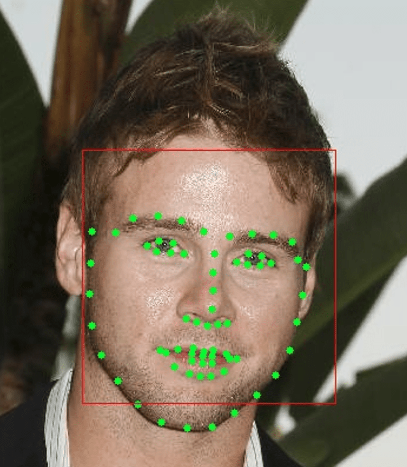

特别的特征：人脸特征
来自本人笔记: https://github.com/masterAllen/LearnOpenCV/blob/main/docs/2.6.md
看这篇文章，需要知道 Cascade 级联分类器。
OpenCV 中人脸特征点的检测逻辑：Cascade 检测出人脸的框，在框内使用人脸特征检测器检测具体点。一共有三种人脸特征检测：FacemarkAAM，FacemarkLBF，FacemarkKazemi。检测的结果就是如下图所示：

1. 单纯使用
看代码即可，lbfmodel.yaml 文件在：https://raw.githubusercontent.com/kurnianggoro/GSOC2017/master/data/lbfmodel.yaml；其他两个没找到相关配置。
Cascade 可以有两种：Harr 和 LBP。链接失效搜索 haarcascade_frontalface_alt 和 lbpcascade_frontalcatface 即可。
#include "opencv2/face.hpp"
#include "opencv2/core.hpp"
#include "opencv2/imgproc.hpp"
#include "opencv2/highgui.hpp"
#include <stdio.h>
#include <iostream>
using namespace cv;
using namespace cv::face;
using namespace std;
int main(int argc, char** argv)
{
/* 加载 FaceMarker，已经有训练好的模型；训练参考后面第二节的介绍 */
// Ptr<FacemarkAAM> facemark = FacemarkAAM::create();
// facemark->loadModel("AAM.yaml");
// Ptr<FacemarkKazemi> facemark = FacemarkKazemi::create();
Ptr<FacemarkLBF> facemark = FacemarkLBF::create();
facemark->loadModel("lbfmodel.yaml");
/* Pick one image. */
Mat rgb_img = imread("./lfpw/testset/image_0002.png");
Mat gray_img; cvtColor(rgb_img, gray_img, cv::COLOR_BGR2GRAY);
/* Start to predict: */
// 1. Cascade 检测具体位置
vector<Rect> faces;
CascadeClassifier faceDetector("haarcascade_frontalface_alt.xml");
faceDetector.detectMultiScale(gray_img, faces);
// 2. FaceMarker 检测特征点
vector< vector<Point2f> > landmarks;
bool success = facemark->fit(rgb_img, faces, landmarks);
if (success) {
// 3. 绘制 FaceMarker 检测的特征点
for (unsigned j = 0; j < landmarks.size(); j++) {
drawFacemarks(rgb_img, landmarks[j], Scalar(0, 255, 0));
}
// 3. 绘制 Cascade 检测出的人脸框
for (unsigned j = 0; j < faces.size(); j++) {
rectangle(rgb_img, faces[j], Scalar(0, 0, 255));
}
}
// 也有将 Cascade 作为 FaceMarker 的参数的用法
// 具体搜索 facemarker 的 setFaceDetector 和 getFaces
imshow("Result of Image 0", rgb_img);
waitKey(1000*5);
return 0;
}
2. 自定义训练
参考 OpenCV 的 turtorial: https://docs.opencv.org/4.x/d5/dd8/tutorial_facemark_aam.html，下载 lfpw 数据集: https://ibug.doc.ic.ac.uk/download/annotations/lfpw.zip
下载需要准备 images_train.txt 和 annotations_train.txt，他们就是每一行表示各个具体文件的路径，如：
images_train.txt
/home/user/lfpw/trainset/100032540_1.jpg
/home/user/lfpw/trainset/100040721_1.jpg
/home/user/lfpw/trainset/100040721_2.jpg
/home/user/lfpw/trainset/1002681492_1.jpg
annotations_train.txt
/home/user/lfpw/trainset/100032540_1.pts
/home/user/lfpw/trainset/100040721_1.pts
/home/user/lfpw/trainset/100040721_2.pts
/home/user/lfpw/trainset/1002681492_1.pts
训练的代码:
// 设置 parms.scales
FacemarkAAM::Params params;
std::vector<float>scales = {1.0, 2.0, 4.0};
params.scales = scales;
// 设置 parms.model_filename: 表示 train 后生成的 yaml 文件
params.model_filename = "AAM.yaml";
// Moudle
Ptr<FacemarkAAM> facemark = FacemarkAAM::create(params);
// Loads the dataset
std::vector<String> images_train;
std::vector<String> landmarks_train;
loadDatasetList("./lfpw/images_train.txt", "./lfpw/annotations_train.txt", images_train, landmarks_train);
// Training...
std::vector<Point2f> facial_points;
for (size_t i = 0; i < images_train.size(); i++) {
Mat facial_image = imread(images_train[i].c_str());
loadFacePoints(landmarks_train[i], facial_points);
facemark->addTrainingSample(facial_image, facial_points);
}
facemark->training();
3. 更复杂的使用
我用上面的训练得出了 FacemarkAAM 的 yaml 模型，然后进行检测特征点，发现结果很差，又尝试了下 opencv 的 samples 代码，发现运行很完美。比较了一下，训练是没有问题，就是使用有不同。由于精力有限，这个就放在这里，等好心人或者自己有空再来研究：
#include <stdio.h>
#include <fstream>
#include <sstream>
#include "opencv2/core.hpp"
#include "opencv2/highgui.hpp"
#include "opencv2/imgproc.hpp"
#include "opencv2/face.hpp"
#include <iostream>
#include <string>
#include <ctime>
using namespace std;
using namespace cv;
using namespace cv::face;
bool getInitialFitting(Mat image, Rect face, std::vector<Point2f> s0,
CascadeClassifier eyes_cascade, Mat& R, Point2f& Trans, float& scale);
int main(int argc, char** argv)
{
// Moudle
Ptr<FacemarkAAM> facemark = FacemarkAAM::create();
facemark->loadModel("AAM.yaml");
//! [base_shape]
FacemarkAAM::Data data;
facemark->getData(&data);
std::vector<Point2f> s0 = data.s0;
CascadeClassifier face_cascade("haarcascade_frontalface_alt.xml");
CascadeClassifier eyes_cascade("haarcascade_eye.xml");
Mat rgb_img = imread("./lfpw/testset/image_0002.png");
//! [detect_face]
Mat gray_img; cvtColor(rgb_img, gray_img, cv::COLOR_BGR2GRAY);
std::vector<Rect> faces;
face_cascade.detectMultiScale(gray_img, faces);
if (faces.size() > 0) {
//! [get_initialization]
std::vector<FacemarkAAM::Config> conf;
std::vector<Rect> faces_eyes;
for (unsigned j = 0; j < faces.size(); j++) {
float scale;
Point2f T;
Mat R;
if (getInitialFitting(rgb_img, faces[j], s0, eyes_cascade, R, T, scale)) {
conf.push_back(FacemarkAAM::Config(R, T, scale, 0));
faces_eyes.push_back(faces[j]);
}
}
//! [fitting_process]
if (conf.size() > 0) {
std::vector<std::vector<Point2f> > landmarks;
facemark->fitConfig(rgb_img, faces_eyes, landmarks, conf);
for (unsigned j = 0; j < landmarks.size(); j++) {
drawFacemarks(rgb_img, landmarks[j], Scalar(0, 255, 0));
}
imshow("fitting", rgb_img);
waitKey(1000 * 5);
}
}
}
bool getInitialFitting(Mat image, Rect face, std::vector<Point2f> s0, CascadeClassifier eyes_cascade, Mat& R, Point2f& Trans, float& scale) {
std::vector<Point2f> mybase;
std::vector<Point2f> T;
std::vector<Point2f> base = Mat(Mat(s0) + Scalar(image.cols / 2, image.rows / 2)).reshape(2);
std::vector<Point2f> base_shape, base_shape2;
Point2f e1 = Point2f((float)((base[39].x + base[36].x) / 2.0), (float)((base[39].y + base[36].y) / 2.0)); //eye1
Point2f e2 = Point2f((float)((base[45].x + base[42].x) / 2.0), (float)((base[45].y + base[42].y) / 2.0)); //eye2
Mat faceROI = image(face);
std::vector<Rect> eyes;
//-- In each face, detect eyes
eyes_cascade.detectMultiScale(faceROI, eyes, 1.1, 2, CASCADE_SCALE_IMAGE, Size(20, 20));
if (eyes.size() == 2) {
int j = 0;
Point2f c1((float)(face.x + eyes[j].x + eyes[j].width * 0.5), (float)(face.y + eyes[j].y + eyes[j].height * 0.5));
j = 1;
Point2f c2((float)(face.x + eyes[j].x + eyes[j].width * 0.5), (float)(face.y + eyes[j].y + eyes[j].height * 0.5));
Point2f pivot;
double a0, a1;
if (c1.x < c2.x) {
pivot = c1;
a0 = atan2(c2.y - c1.y, c2.x - c1.x);
}
else {
pivot = c2;
a0 = atan2(c1.y - c2.y, c1.x - c2.x);
}
scale = (float)(norm(Mat(c1) - Mat(c2)) / norm(Mat(e1) - Mat(e2)));
mybase = Mat(Mat(s0) * scale).reshape(2);
Point2f ey1 = Point2f((float)((mybase[39].x + mybase[36].x) / 2.0), (float)((mybase[39].y + mybase[36].y) / 2.0));
Point2f ey2 = Point2f((float)((mybase[45].x + mybase[42].x) / 2.0), (float)((mybase[45].y + mybase[42].y) / 2.0));
#define TO_DEGREE 180.0/3.14159265
a1 = atan2(ey2.y - ey1.y, ey2.x - ey1.x);
Mat rot = getRotationMatrix2D(Point2f(0, 0), (a1 - a0) * TO_DEGREE, 1.0);
rot(Rect(0, 0, 2, 2)).convertTo(R, CV_32F);
base_shape = Mat(Mat(R * scale * Mat(Mat(s0).reshape(1)).t()).t()).reshape(2);
ey1 = Point2f((float)((base_shape[39].x + base_shape[36].x) / 2.0), (float)((base_shape[39].y + base_shape[36].y) / 2.0));
ey2 = Point2f((float)((base_shape[45].x + base_shape[42].x) / 2.0), (float)((base_shape[45].y + base_shape[42].y) / 2.0));
T.push_back(Point2f(pivot.x - ey1.x, pivot.y - ey1.y));
Trans = Point2f(pivot.x - ey1.x, pivot.y - ey1.y);
return true;
}
else {
Trans = Point2f((float)(face.x + face.width * 0.5), (float)(face.y + face.height * 0.5));
return false;
}
}